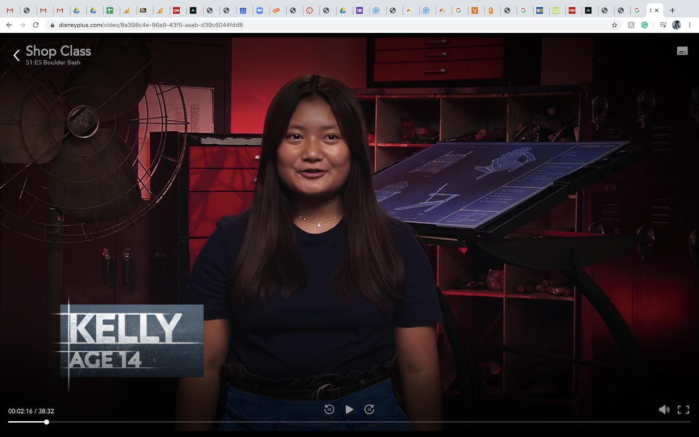
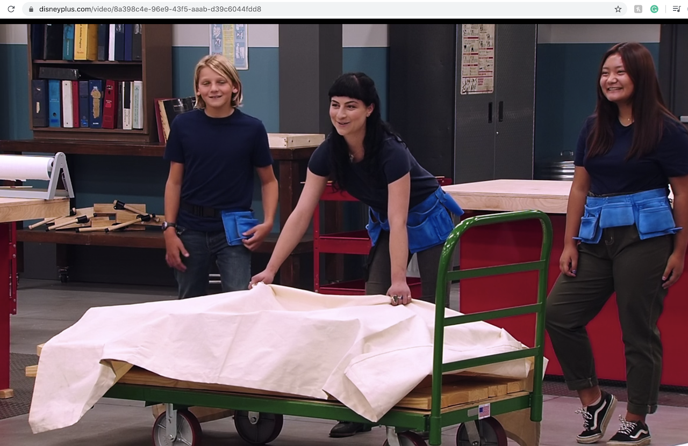
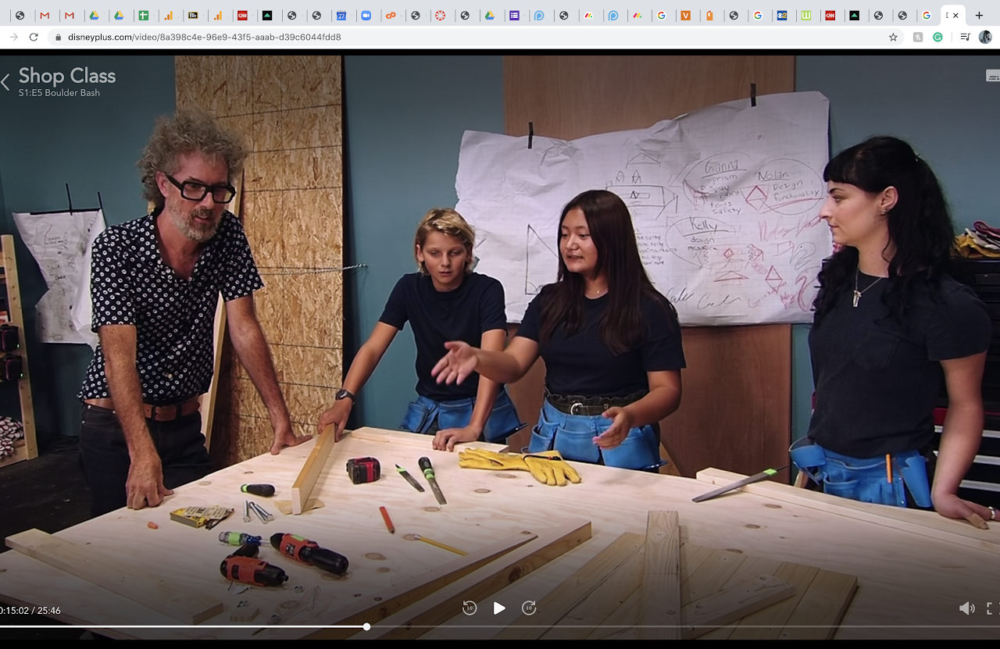
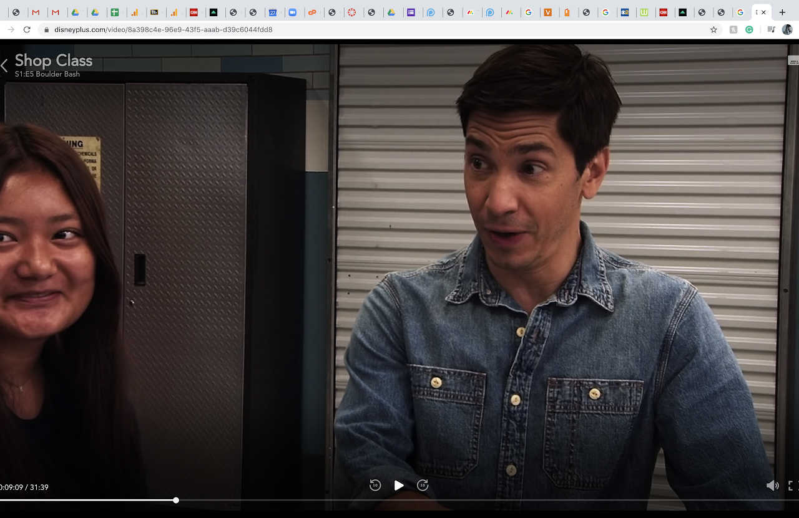

Kelly Ractham
One of my favorite activities growing up was watching the news on TV.
I learned about many problems in our economies and society and how politicians created robust laws and regulations to solve them.
The stories of women political leaders like Alexandria Ocasio-Cortez inspired me, and I was determined to become like her.
She was intelligent, passionate, outspoken, and most importantly,
she cared about her community and wanted to improve the lives of others.
I studied a variety of social science subjects in high school, including sociology and psychology as my electives.
I also studied politics and international relations on my own, and I became involved with online political groups.
I attended annual Women Political Leaders virtual summits.
I promoted and participated Girl2Leader and the International Day of the Girl campaigns on social media.
To inspire women to participate in politics, I created a website, Dear Women in Politics,
featuring background stories, career development, and significant achievements of female politicians.
To bring awareness to the challenges facing women today, I created multiple social media channels,
including Twitter, Instagram, and Tiktok, that reached and engaged many people.
I received numerous supporting messages from people who shared their thoughts and experiences,
and some asked about where they could learn more and how they could participate.
One day, I hope to expand the Dear Women in Politics platform into a nonprofit organization
that helps increase the visibility and influence of women in politics and make a positive impact on our community and society.
Films tell stories that touch our hearts and souls and help us see the beauty in the smallest things.
Filmmaking combines a variety of creative activities such as writing, directing, editing, cinematography, costume design, and acting.
I am attracted to the imaginative expression of films and the artistic filmmaking process.
I've been making short films since I was a kid.
My short films won film awards and I acted in a Disney+ show.
I explored my creativity through these artsy projects and learned to embrace hard work.
Media and films can connect with people, raise awareness, and initiate change.
I look forward to integrating my film experience with my future study and career.
Experience
Founder
• Developed website for Dear Women in Politics
• Promoted the website on social media
• Experience with HTML, CSS, Javascript, Photoshop
Film Maker, Actor
• writing, directing, editing, cinematography, costume design.
• acting in Disney+ "Shop Class"
Social Media Consultant
• Provided advice on social media strategy and planning.
• Identified trending topics, created viral content
• Built social influence, and grew audience for individuals.
Education
University of California Riverside
Bonita High School
Portfolio



